In this project, I utilized Python and the Pandas library to conduct a comprehensive analysis of patient health metrics to identify key indicators of Diabetes.
I focused on data cleaning, feature engineering based on clinical thresholds (HbA1c), and demographic stratification to pinpoint high-risk patient segments.
The goal was to transform raw physiological data into actionable medical insights, specifically exploring the correlation between age, gender, and diabetic status.
The File I used is titled "diabetes_unclean.csv" and can be found in my github repository, with the link provided at the bottom of this page.
I began by importing the necessary libraries and loading the dataset to inspect its structure and initial statistical distribution.
import pandas as pd
import numpy as np
import matplotlib.pyplot as plt
import seaborn as sns
df = pd.read_csv('diabetes_unclean.csv')
df.head()
# show 5 rows
df.info()
#Summary of the data read
df.describe()
#data statistics of each column
Code Feedback:
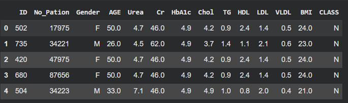
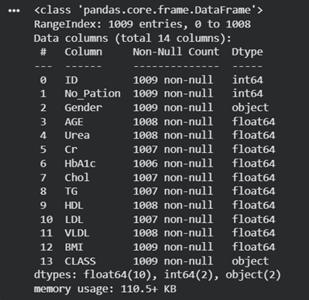
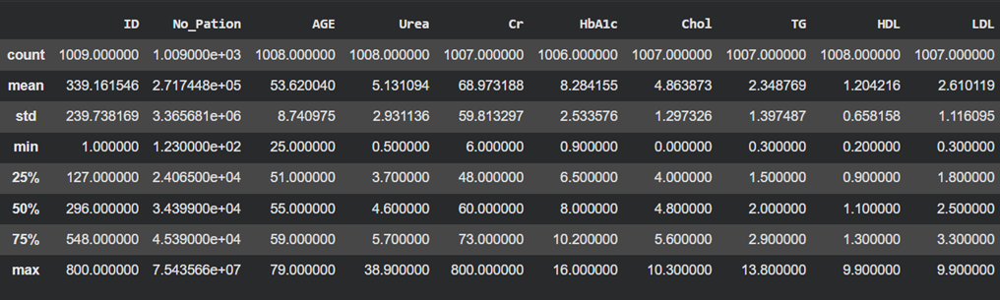
I performed a multi-step audit for missing values to ensure the integrity of the clinical data before dropping incomplete rows.
df.isna().sum()
#total number of missing values in each column
df[df.isna().any(axis=1)]
# search for any rows with missing cell value.
df = df.dropna()
#dropped rows with empty cells
df.isna().sum()
#Now there isn't any empty cells
Code Feedback:
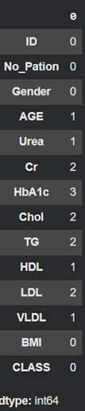
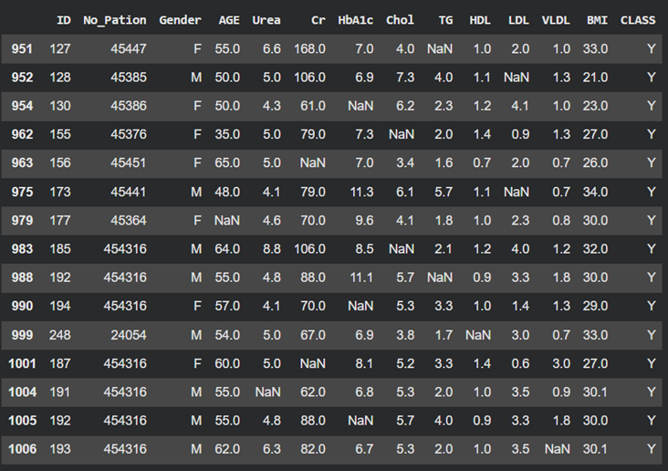
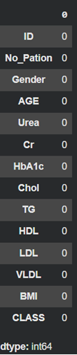
I renamed non-standard columns for clarity and conducted recursive checks for duplicate patient records.
df.rename(columns={'No_Pation': 'Patient_ID'}, inplace=True)
display(df.head())
#changed the column No_Pation to Patient_ID and displayed 5 rows
print(df.duplicated('Patient_ID').sum())
#Search for duplicates
df.drop_duplicates('Patient_ID', inplace=True)
#Drop duplicate patients using their ID
print(df.duplicated('Patient_ID').sum())
#Now there isn't any duplicate patient that appears
print(df.duplicated().sum())
#checking for overall rows that are dups.
Code Feedback:
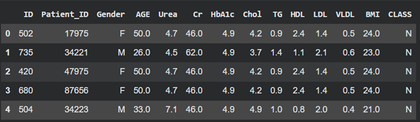
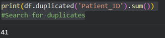
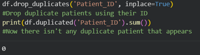
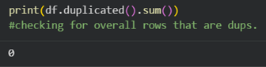
After targeting and correcting a specific gender labeling error, I performed a final statistical summary to confirm the data was ready for visualization.
row_that_is_wrong = df[(df['Gender'] != 'M') & (df['Gender'] != 'F')]
row_that_is_wrong
#find the row that has their gender not labeled as M or F
df.loc[df['Patient_ID']== 4543, 'Gender'] = 'F'
#Find patientID 4543 and replace the Gender of the row to F.
df.describe()
#Seeing how many rows were removed
#Now we are ready
Code Feedback:
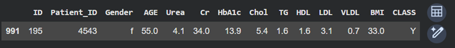
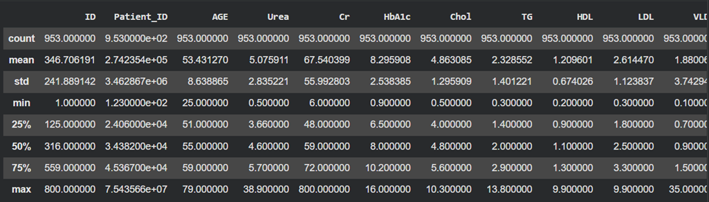
I began the visual phase by analyzing the overall gender balance of the entire study cohort.
sns.set_style('darkgrid')
plt.figure(figsize=(6,4))
plt.pie(df['Gender'].value_counts(), labels=df['Gender'].value_counts().index, autopct='%1.1f%%')
plt.title('Gender Distribution')
plt.show()
#Data holds 56.5% of Males and 43.5% Females
Code Feedback:
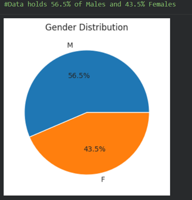
I mapped raw HbA1c values to medical categories (Normal, Pre-diabetes, Diabetes) and verified the new data structure.
conditions = [
(df['HbA1c'] < 5.7),
(df['HbA1c'] >=5.7 ) & (df['HbA1c'] < 6.5),
(df['HbA1c'] >= 6.5)
]
values = ['Normal', 'Pre-diabetes', 'Diabetes']
#Create a condition to label diabetes status.
df['Diabetes_Status'] = np.select(conditions, values, default='Unknown')
df
#Created a new column Diabetes_Status using the condition we just made.
Code Feedback:
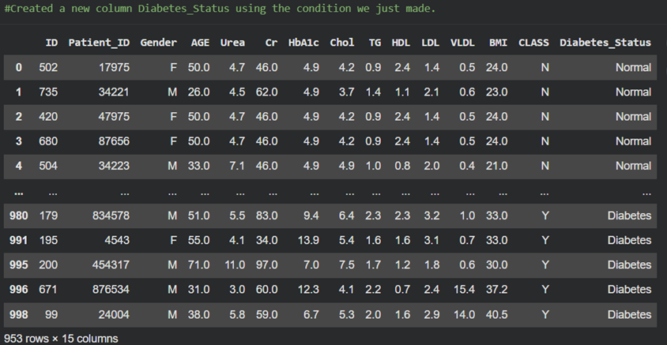
I isolated the diabetic group to examine the raw counts and gender split within this specific population.
diabetes_by_gender = df[df['Diabetes_Status'] == 'Diabetes']
Gender_Count = diabetes_by_gender['Gender'].value_counts()
print("Overall Diabetes Patients Gender Counts:")
print(Gender_Count)
plt.figure(figsize=(6,4))
plt.pie(Gender_Count, labels= Gender_Count.index, autopct='%1.1f%%')
plt.title('Gender Distribution of All Diabetes Patients')
plt.show()
print(Gender_Count)
Code Feedback:
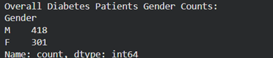
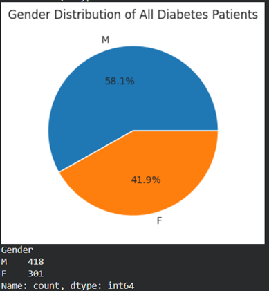
I categorized the diabetic population into age divisions, which immediately revealed a heavy skew toward the Senior demographic.
diabetes_patients = df[df['Diabetes_Status'] == 'Diabetes']
age_division = [
(diabetes_patients['AGE'] < 35),
(diabetes_patients['AGE'] >= 35 ) & (diabetes_patients['AGE'] < 50),
(diabetes_patients['AGE'] >= 50)
]
age_group = ['Youth', 'Middle Age', 'Senior']
plt.figure(figsize=(10,6))
sns.countplot(x=np.select(age_division, age_group, default='Unknown'), data=diabetes_patients)
plt.title('Age Division of Patients')
plt.xlabel('Age Division')
plt.ylabel('Count')
plt.show()
#Chart shows Diabetes is way more frequent for those ages equal or above 50.
Code Feedback:
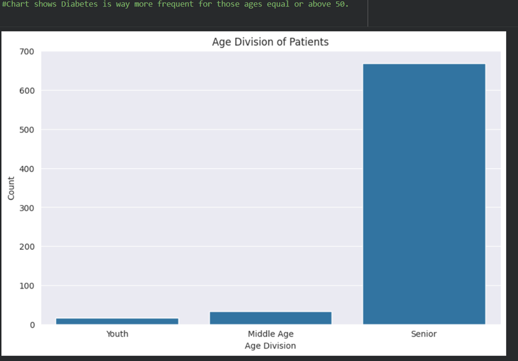
Finally, I examined the gender split specifically within the Senior group (Age 50+) to compare it against the overall diabetic group.
diabetes_by_gender_Senior = df[(df['Diabetes_Status'] == 'Diabetes') & (df['AGE'] >= 50)]
Gender_Count_Senior = diabetes_by_gender_Senior['Gender'].value_counts()
plt.figure(figsize=(6,4))
plt.pie(Gender_Count_Senior, labels= Gender_Count_Senior.index, autopct='%1.1f%%')
plt.title('Gender Distribution of Diabetes Patients in Senior Age Group')
plt.show()
Code Feedback:
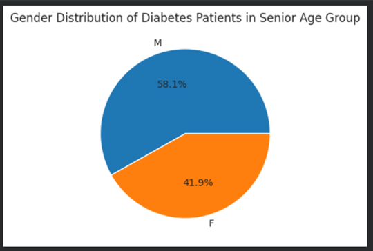
I concluded with a raw count verification to audit why the Senior pie chart closely mirrored the overall diabetic results!
print(f"Total Diabetic Patients: {len(df[df['Diabetes_Status'] == 'Diabetes'])}")
print(f"Senior Diabetic Patients: {len(diabetes_by_gender_Senior)}")
# Was wondering why the pie chart is so identical to the previous one so had to check
Code Feedback:
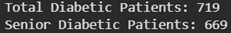
You can find the raw data I used in my repository titled :"diabetes_unclean.csv"